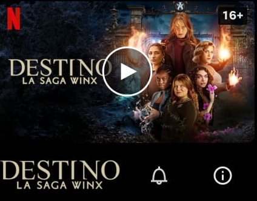
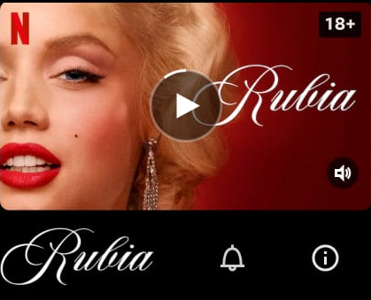

Nuevo y popular
Proximamente
Lo más cool
Las 10 series más populares
sept.
16

Temporada 2 disponible el viernes
Bloom creia que las hadas eran un invento. Pero al enterarse de que ella es una debe aceptar sus nuevos poderes
y amistades mientras enfrentra a monstruos letales.
sept.
16
Estreno el viernes
Una chica popular destronada en una escuela privada hace un acuerdo secreto con una una nueva estudiante
para vengarse de los enemigos de ambas.
sept.
20
 Estreno el viernes
Plagada de momentos dignos de memes, esta comedia aclamada por la critica aborda
temas actuales, con el lugar de trabajo como eje central para el humor.
Estreno el viernes
Plagada de momentos dignos de memes, esta comedia aclamada por la critica aborda
temas actuales, con el lugar de trabajo como eje central para el humor.
sept.
28

Estreno el viernes
Este retrato ficticio de Marilyn Monroe ofrece una mirada audaz de la
tumultuosa vida privada de la leyenda de Hollywood... y del precio que pagó
por la fama